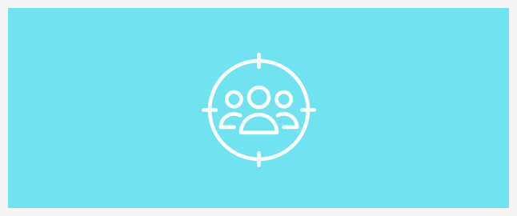
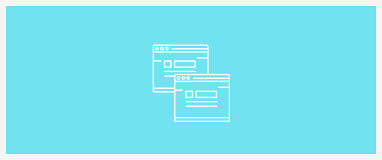

新闻动态
咨询热线
400-123-4567传真：+86-123-4567
网站设计与SEO的关系，高手是从这4个维度分析的！
SEO（搜索引擎优化）和有效的网站设计是齐头并进的。好的网站设计是关于创建一个吸引目标受众的网站，并让他们采取某种行动。但是，如果该网站不遵循目前的 SEO 最佳做法，它的排名将会受到影响，从而会导致真正参与该网站的访问者的数量的较少。
相反地，如果将关注的焦点放在搜索引擎优化以及如何取悦搜索引擎蜘蛛上，那么网站可能会排名很高，并且会获得大量的搜索引擎流量，但是如果设计很不尽人意，那就不一样了。为了在当今的数字环境中取得成功，必须将重点放在网站设计和搜索引擎优化上。
一、但是，SEO 不会扼杀掉网页设计师的创造力吗？
在过去的五年中，对“优化设计”的巨大需求已经被网页设计师所接受。在此之前，设计师们主要关注的是用户的体验，而不是“机器人”的体验。
如今，设计师不仅要让网站看起来有吸引力，而且要确保行为召唤必须符合网站页面“折叠”的要求，网站的加载速度必须很快，必须使用面包屑路径，清晰明了的导航选择，必须使用 CSS，JavaScript 文件必须保持在最低限度…这是一项艰巨的任务。
一些设计师可能想知道，所有这些新的 SEO 规则是否会损害创建网站的自由？
对于“干净”的网站设计而言，它可以帮助一个网站快速加载，容易被搜索引擎蜘蛛抓取。因此，在现实中，创造力和最优化需要能够同时在一起“蓬勃发展”。
二、把它们结合在一起
有一些核心元素支持每一个 SEO 策略和网站设计项目：
1. 关键词分析
在启动一个商业网站项目时，必须进行彻底的关键词分析。为了做到这一点，网页设计师必须紧密深入地了解客户的目标受众，并定义受众中的人口结构是如何融入到企业正试图达到的更大的目标市场。然后，应该对网站进行适当的关键词/长尾关键词优化。

2. 内容层次结构
对于一个企业来说，创建好的内容是不够的，他们还必须在战略上规划内容的位置。
有效的计划意味着将相关的内容放到虚拟的容器中，通过创造性的设计和内部链接让内容层级结构一目了然。并且，一个经过优化的网站是对用户和搜索引擎蜘蛛都很友好的网站。
3. 从用户的角度思考
通常情况下，你的网站有越多的页面或文章，目标用户找到你的机会就越多。当他们着陆这些特定的页面的时候，你需要确保你能帮助他们轻松的找到你。
所以你必须从用户的角度进行思考，要让用户立即清楚地知道他们在进行访问的页面的当前位置，并帮助用户在尽可能少的点击下从页面转换到另一页面。

三、为什么 SEO 策略如此重要？
拥有合适的网站结构和信息架构，最终将会帮助企业提供一种引人入胜的用户体验，同时减少对每一次新增长的需求。但是，除非你的品牌是众所周知的，否则通常是搜索引擎对网站所收到的大部分流量负责。SEO 策略有能力利用重要的客户数据，挖掘新的潜在收入流。
对于那些试图进行搜索引擎优化的网站所有者来说，有一些地方经常是麻烦的。现在，我将为网站所有者提供搜索引擎优化建议，以获得更高排名的页面。

1. URL 结构
大多数网站创建的 URL 都包含很多随机字符，比如问号，没有关键词或任何有价值的内容。当搜索引擎的 URL 包含 SEO 的关键词或短语时，页面将会在搜索引擎中排名更高。因此，在 URL 中设置关键词非常重要。
2. 页面的标题
搜索引擎排名中最重要的因素之一是页面标题。不过，许多网站并没有改变他们的网页标题。在青柠建站平台中，你可以通过使用 SEO 标题标签插件，它很容易让你为你的文章和页面创建标题。
3. 重复的内容
没有一个搜索引擎喜欢看到重复的内容。重复内容是一些网站的主要问题，因为类别页面和日历/日期页面经常会导致搜索引擎在多个页面上找到相同的内容。
对于网站所有者来说，有几种方法可以克服重复的内容问题。其中一种方法是使用 robot.txt 文件，用来指导搜索引擎哪些页面应该被忽略，只留下要索引的主要页面。

4. Meta 标签
在设计一个传统的静态网站时，你可以为每个页面输入元标签（描述）。尽管这些标签在搜索引擎排名上的影响力没有以前那么大，但在你的页面上有这些标签并不会带来什么坏处。
然而，大多数建站平台并没有给用户在写文章时添加元标签的选项。对于 青柠建站平台 用户来说，添加元标签插件将允许你为任何页面输入元标签。
四、网页设计师在 SEO 方面的职责是什么？
搜索引擎优化是一个持续的过程，它不能通过以特定的方式设计一个网站来实现。当然，网页设计师应该付出相当大的努力来帮助客户构建一个优化的站点，但是网页设计师在 SEO 方面的职责是什么，以及客户的职责是什么？
作为一个企业主，你的网站的优化对你来说比设计师更重要（这并不是说设计师不关心，但是设计师的注意力通常集中在网站的视觉和功能上）。你比设计师更了解你的客户 / 潜在客户，所以你应该对你的目标有更多的建设性意见。
也许有些客户对 SEO 和目标关键词可能不太了解，那么理想的情况是让客户和你在这个问题上协同工作。
根据我的经验，让客户参与其中的最简单方法之一就是简单地解释网站上使用的词语和短语（标题、文案等）会对网站排名有直接的影响。
我通常会要求客户给我一份他们认为潜在访问者可能会在搜索中使用的词语和短语列表。在我不太熟悉的行业中设计网站时，这一点尤其重要。
当然，可能需要做一些研究。客户应该承担起关键词研究的责任，还是应该由设计师来负责？
我的经验是，如果客户参与进来，这项研究通常会更有效，但这并不总是可能的。设计师应该有足够的知识来为客户提供建议，并且应该愿意提供帮助，但是最终最好还是让客户尽可能地参与进来。事实上，如果客户关心 SEO，参与过程会达到一个更加合理的期望。
设定现实的期望也可能是设计师的责任。
我有一些潜在的客户来找我说：“我被 SEO 专家告知，只要在网站页面上插入竞争热门的关键词就可以让我的网站排名第一或第二”。
在这种情况下，我会很明显地会指出，“搜索引擎优化需要持续的工作，而这种工作通常不能通过以某种方式创建网站来完成的。”
我经常建议客户在他们的网站上添加一个博客，以获得更多的内容，并提高排名的机会。
结语
虽然这只是一个简短的总结，但这些是网站所有者和设计师将面对的最重要的 SEO 话题。通过了解这些知识，你可以更好地创建出对用户和搜索引擎都友好的网站。
本文由易优小编设计 原创授权发布易优网站，未经授权，转载必究。